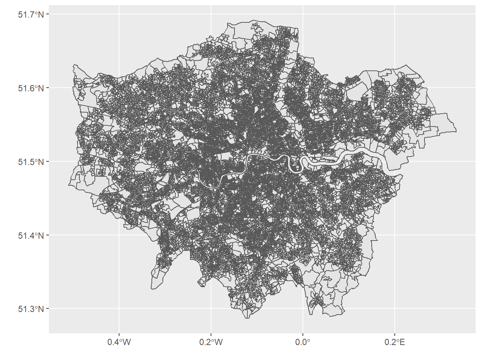

require(data.table)
require(tidyverse)
fread("https://www.dropbox.com/s/7xb76wliw4qoy4q/Output_Area_%282001%29_to_Output_Area_%282011%29_to_Local_Authority_District_%282011%29_Lookup_in_England_and_Wales.csv?dl=1",
showProgress = FALSE,
select = c(1: 4)) |>
as_tibble() |>
full_join(
fread("https://www.dropbox.com/s/wn6y5juef85nlgf/OA_%282011%29_to_OA_%282021%29_to_Local_Authority_District_%282022%29_for_England_and_Wales_Lookup.csv?dl=1",
showProgress = FALSE,
select = c(1: 5)) |>
as_tibble(),
by = "OA11CD") |>
rename(CHG11 = CHGIND, CHG21 = CHNGIND) |>
mutate(CHG21 = ifelse(CHG21 == "x", "X", CHG21)) -> dfCreating harmonised pseudo-Output Areas for the 2001, 2011 & 2021 Censuses (England and Wales)
Please cite as
Harris R (2022) Creating harmonised pseudo-Output Areas for the 2001, 2011 & 2021 Censuses (England and Wales). https://profrichharris.github.io/census/harmonised.
The resulting files can be downloaded from https://www.dropbox.com/sh/jq4dkokxyflxpei/AAD1GOvoN7R_YyRQSN3aSMQ4a?dl=0
Introduction
One of the great step forwards from the 2001 Census onwards was the use of statistical Output Areas (OAs) at the most granular scale that are kept as consistent as possible from one census to the next. However, a few do change so, to make analysing change over time a little easier, we can lightly aggregate them into a consistent set of pseudo-OAs that have the same geography for each census.
Source data
The key to it all are the following lookup files: https://geoportal.statistics.gov.uk/maps/output-area-2001-to-output-area-2011-to-local-authority-district-2011-lookup-in-england-and-wales-1
We can begin by reading them into R, joining them together, and tidying them up a little:
What we obtain is a data file, df, which shows all the ‘connections’ between Output Areas from the 2001 Census, OA01CD, to the 2011 Census, OA11CD, to the 2021 Census, OA21CD. For example, OA E00000001 is unchanged (“U”) across censuses, whereas E00000004 is merged (“M”) into E00166758 for 2011 but split (“S”) into OAs that include E00190429 in 2021:
df |>
filter(OA01CD == "E00000001")# A tibble: 1 × 8
OA01CD OA01CDO OA11CD CHG11 OA21CD CHG21 LAD22CD LAD22NM
<chr> <chr> <chr> <chr> <chr> <chr> <chr> <chr>
1 E00000001 00AAFA0001 E00000001 U E00000001 U E09000001 City of Londondf |>
filter(OA01CD == "E00000004")# A tibble: 2 × 8
OA01CD OA01CDO OA11CD CHG11 OA21CD CHG21 LAD22CD LAD22NM
<chr> <chr> <chr> <chr> <chr> <chr> <chr> <chr>
1 E00000004 00AAFA0004 E00166758 M E00190429 S E09000001 City of London
2 E00000004 00AAFA0004 E00166758 M E00190433 S E09000001 City of LondonThe extra OA01CDO arises because the original 2001 Census Output Area codes were recoded prior to 2011. OA01CDO are the original codes. OA01CD are what they became.
Stage 1
Imagine an Output Area, X, from one census is split into Y and Z for the next. That means X, Y and Z are all connected, where X is the parent of Y and Z. Alternatively, imagine X and Y from one census are merged into Z for the next. They are still all connected but, in the second case, Z is the parent of X and Y. Applying similar logic allows a consistent OA code, OAXXCD, to be applied to the majority of cases in the data file, df.
df |>
mutate(OAXXCD = NA) |>
mutate(OAXXCD = ifelse(CHG11 == "U" & CHG21 == "U", OA21CD, OAXXCD)) |>
mutate(OAXXCD = ifelse(CHG11 == "M" & CHG21 == "U", OA21CD, OAXXCD)) |>
mutate(OAXXCD = ifelse(CHG11 == "S" & CHG21 == "U", OA01CD, OAXXCD)) |>
mutate(OAXXCD = ifelse(CHG11 == "U" & CHG21 == "M", OA21CD, OAXXCD)) |>
mutate(OAXXCD = ifelse(CHG11 == "U" & CHG21 == "S", OA11CD, OAXXCD)) |>
mutate(OAXXCD = ifelse(CHG11 == "S" & CHG21 == "S", OA01CD, OAXXCD)) |>
mutate(OAXXCD = ifelse(CHG11 == "M" & CHG21 == "M", OA21CD, OAXXCD)) |>
mutate(OAXXCD = ifelse(CHG11 == "M" & CHG21 == "S", OA11CD, OAXXCD)) -> dfHowever, there are some cases that cannot be resolved in this way:
df |>
filter(is.na(OAXXCD))# A tibble: 1,146 × 9
OA01CD OA01CDO OA11CD CHG11 OA21CD CHG21 LAD22CD LAD22NM OAXXCD
<chr> <chr> <chr> <chr> <chr> <chr> <chr> <chr> <chr>
1 E00000233 00ABGD0001 E00175112 S E00185671 M E09000002 Barkin… <NA>
2 E00000105 00ABFZ0005 E00165805 X E00165805 U E09000002 Barkin… <NA>
3 E00000729 00ACGA0007 E00000729 U E00178723 X E09000003 Barnet <NA>
4 E00000731 00ACGA0009 E00000731 U E00178723 X E09000003 Barnet <NA>
5 E00000731 00ACGA0009 E00000731 U E00178889 X E09000003 Barnet <NA>
6 E00000731 00ACGA0009 E00000731 U E00178893 X E09000003 Barnet <NA>
7 E00000733 00ACGA0011 E00000733 U E00178724 X E09000003 Barnet <NA>
8 E00000733 00ACGA0011 E00000733 U E00178891 X E09000003 Barnet <NA>
9 E00000733 00ACGA0011 E00000733 U E00178892 X E09000003 Barnet <NA>
10 E00000734 00ACGA0012 E00000734 U E00178724 X E09000003 Barnet <NA>
# … with 1,136 more rowsand they arise in the following circumstances,
df |>
filter(is.na(OAXXCD)) |>
select(CHG11, CHG21) |>
group_by(CHG11, CHG21) |>
summarise(n = n()) |>
print(n = Inf)`summarise()` has grouped output by 'CHG11'. You can override using the
`.groups` argument.# A tibble: 9 × 3
# Groups: CHG11 [5]
CHG11 CHG21 n
<chr> <chr> <int>
1 M X 24
2 S M 456
3 S X 140
4 U X 246
5 X S 14
6 X U 209
7 <NA> M 4
8 <NA> S 15
9 <NA> U 38Stage 2
Some of the cases that have yet to be resolved arise because there is no connection between the 2001 Census codes and the 2011 Census ones.
df |>
filter(is.na(CHG11))# A tibble: 57 × 9
OA01CD OA01CDO OA11CD CHG11 OA21CD CHG21 LAD22CD LAD22NM OAXXCD
<chr> <chr> <chr> <chr> <chr> <chr> <chr> <chr> <chr>
1 <NA> <NA> E00165720 <NA> E00165720 U E08000012 Liverpool <NA>
2 <NA> <NA> E00165673 <NA> E00165673 U E08000035 Leeds <NA>
3 <NA> <NA> E00165738 <NA> E00165738 U E07000245 West Suffolk <NA>
4 <NA> <NA> E00165746 <NA> E00165746 U E08000026 Coventry <NA>
5 <NA> <NA> E00165758 <NA> E00165758 U E08000012 Liverpool <NA>
6 <NA> <NA> E00165767 <NA> E00165767 U E06000003 Redcar and C… <NA>
7 <NA> <NA> E00165770 <NA> E00165770 U E06000003 Redcar and C… <NA>
8 <NA> <NA> E00165773 <NA> E00188170 M E06000003 Redcar and C… <NA>
9 <NA> <NA> E00165703 <NA> E00165703 U E06000007 Warrington <NA>
10 <NA> <NA> E00165705 <NA> E00165705 U E06000007 Warrington <NA>
# … with 47 more rowsI will resolve this through proximity matching. Specifically, by giving the population weighted centroid of OA11CD a holding OA01CD of the nearest population weighted centroid from 2001. The population weighted centroids are available from https://geoportal.statistics.gov.uk/maps/output-areas-december-2001-population-weighted-centroids-2 and from https://geoportal.statistics.gov.uk/maps/output-areas-dec-2011-pwc.
require(RANN)
read_csv("https://www.dropbox.com/s/1fcm9ggpxudv72l/Output_Areas_%28December_2001%29_Population_Weighted_Centroids.csv?dl=1") |>
select(X, Y, oa01cd) |>
rename(OA01CD = oa01cd) -> pts01
read_csv("https://www.dropbox.com/s/bsyg152nkcthvzc/Output_Areas_%28Dec_2011%29_PWC.csv?dl=1") |>
select(X, Y, OA11CD) |>
semi_join(df |> filter(is.na(OA01CD)), by = "OA11CD") -> pts11
i <- nn2(data = pts01 |> select(-OA01CD),
query = pts11 |> select(-OA11CD),
k = 1)$nn.idx[,1]
left_join(df,
data.frame(OA11CD = pts11$OA11CD, nearest = pts01$OA01CD[i]),
by = "OA11CD") |>
mutate(OA01CD = ifelse(!is.na(nearest), nearest, OA01CD)) |>
select(-nearest) -> dfNote that whilst all the cases where is.na(CHG11) have now been given a holding OA01CD, the OAXXCD has yet to be assigned. That will be included in the next stage.
df |>
filter(is.na(CHG11)) |>
select(OA01CD, CHG11, OAXXCD)# A tibble: 57 × 3
OA01CD CHG11 OAXXCD
<chr> <chr> <chr>
1 E00033058 <NA> <NA>
2 E00056821 <NA> <NA>
3 E00152565 <NA> <NA>
4 E00048351 <NA> <NA>
5 E00032881 <NA> <NA>
6 E00061137 <NA> <NA>
7 E00061229 <NA> <NA>
8 E00061071 <NA> <NA>
9 E00063383 <NA> <NA>
10 E00063066 <NA> <NA>
# … with 47 more rowsStage 3
The next stage is to best illustrated with an example. The Output Area E00000233 has yet to be assigned an OAXXCD because of how it has been split but subsequently merged in successive censuses:
df |>
filter(is.na(OAXXCD)) |>
select(OA01CD, OA11CD, OA21CD, OAXXCD, CHG11, CHG21) |>
slice(n = 1)# A tibble: 1 × 6
OA01CD OA11CD OA21CD OAXXCD CHG11 CHG21
<chr> <chr> <chr> <chr> <chr> <chr>
1 E00000233 E00175112 E00185671 <NA> S M What we need to do is find every output area that is connected to E00000233 through any of the censuses. Initially, these are,
df |>
filter(is.na(OAXXCD)) |>
slice(n = 1) -> search
df |>
filter(OA01CD %in% search$OA01CD |
OA11CD %in% search$OA11CD |
OA21CD %in% search$OA21CD) -> found
found# A tibble: 8 × 9
OA01CD OA01CDO OA11CD CHG11 OA21CD CHG21 LAD22CD LAD22NM OAXXCD
<chr> <chr> <chr> <chr> <chr> <chr> <chr> <chr> <chr>
1 E00000233 00ABGD0001 E00175110 S E00175110 U E09000002 Barking… E0000…
2 E00000233 00ABGD0001 E00175111 S E00185716 S E09000002 Barking… E0000…
3 E00000233 00ABGD0001 E00175111 S E00185773 S E09000002 Barking… E0000…
4 E00000233 00ABGD0001 E00175111 S E00185814 S E09000002 Barking… E0000…
5 E00000233 00ABGD0001 E00175112 S E00185671 M E09000002 Barking… <NA>
6 E00000233 00ABGD0001 E00175121 S E00175121 U E09000002 Barking… E0000…
7 E00000233 00ABGD0001 E00175122 S E00175122 U E09000002 Barking… E0000…
8 E00000242 00ABGD0010 E00000242 U E00185671 M E09000002 Barking… E0018…But we also need to check for the the connections of the connections and so forth, recursively, until no more are found:
n <- nrow(found)
n.previous <- 0
while(n > n.previous) {
n.previous <- n
search <- found
df |>
filter(OA01CD %in% search$OA01CD |
OA11CD %in% search$OA11CD |
OA21CD %in% search$OA21CD) -> found
n <- nrow(found)
}Once this is done, all of the connected output areas can be assigned the same identifying OAXXCD.
df |>
mutate(OAXXCD = ifelse(OA01CD %in% found$OA01CD |
OA11CD %in% found$OA11CD |
OA21CD %in% found$OA21CD,
found$OA21CD[1],
OAXXCD)) -> dfAnd this whole process needs to be repeated for every instance of where is.na(OAXXCD), which will take a few minutes to complete.
while(nrow(df |> filter(is.na(OAXXCD))) > 0) {
df |>
filter(is.na(OAXXCD)) |>
slice(n = 1) -> found
n <- nrow(found)
n.previous <- 0
while(n > n.previous) {
n.previous <- n
search <- found
df |>
filter(OA01CD %in% search$OA01CD |
OA11CD %in% search$OA11CD |
OA21CD %in% search$OA21CD) -> found
n <- nrow(found)
}
df |>
mutate(OAXXCD = ifelse(OA01CD %in% found$OA01CD |
OA11CD %in% found$OA11CD |
OA21CD %in% found$OA21CD,
found$OA21CD[1],
OAXXCD)) -> df
}The end result is that all of the Output Areas from each of the censuses are now assigned to one of 174363 unique pseudo-OAs, each with its own OAXXCD.
df# A tibble: 190,743 × 9
OA01CD OA01CDO OA11CD CHG11 OA21CD CHG21 LAD22CD LAD22NM OAXXCD
<chr> <chr> <chr> <chr> <chr> <chr> <chr> <chr> <chr>
1 E00000001 00AAFA0001 E00000001 U E00000001 U E09000001 City o… E0000…
2 E00000051 00ABFX0015 E00000051 U E00000051 U E09000002 Barkin… E0000…
3 E00000002 00AAFA0002 E00166756 M E00166756 U E09000001 City o… E0016…
4 E00000003 00AAFA0003 E00000003 U E00000003 U E09000001 City o… E0000…
5 E00000004 00AAFA0004 E00166758 M E00190429 S E09000001 City o… E0016…
6 E00000004 00AAFA0004 E00166758 M E00190433 S E09000001 City o… E0016…
7 E00000005 00AAFA0005 E00000005 U E00000005 U E09000001 City o… E0000…
8 E00000006 00AAFA0006 E00166758 M E00190429 S E09000001 City o… E0016…
9 E00000006 00AAFA0006 E00166758 M E00190433 S E09000001 City o… E0016…
10 E00000007 00AAFA0007 E00000007 U E00000007 U E09000001 City o… E0000…
# … with 190,733 more rowslength(unique(df$OAXXCD))[1] 174363These OAXXCD are a combination of various OA01CD, OA11CD and OA21CD codes. To avoid confusion, it may be better to replace those with custom numbered identifiers:
df |>
arrange(OA01CD) -> df
df |>
select(OAXXCD) |>
filter(!duplicated(OAXXCD)) -> gps
data.frame(OAXXCD = gps$OAXXCD, i = 1: nrow(gps)) -> gps
df |>
left_join(gps, by = "OAXXCD") |>
mutate(i = str_pad(i, width = 7, pad = "0")) |>
mutate(OAXXCD = paste0("X", i, substr(OAXXCD, 1, 1))) |>
select(-i) -> dfWe should also reset the OA01CD for those based on spatial proximity back to their original NA value.
df |>
mutate(OA01CD = ifelse(is.na(CHG11), NA, OA01CD)) -> dfLook-up files
We are now in a position to save the look-up files.
df |>
write_csv("OAXXCD_full_lookup.csv")
df |>
select(OA01CDO, OA01CD, OAXXCD) |>
unique(na.rm = TRUE) |>
arrange(OA01CD) |>
write_csv("OA01CD_to_OAXXCD.csv")
df |>
select(OA11CD, OAXXCD) |>
unique(na.rm = TRUE) |>
arrange(OA11CD) |>
write_csv("OA11CD_to_OAXXCD.csv")
df |>
select(OA21CD, OAXXCD) |>
unique(na.rm = TRUE) |>
arrange(OA21CD) |>
write_csv("OA21CD_to_OAXXCD.csv")Higher-level geographies
It is helpful to know which higher-level geographies the pseudo-OAs fall within. Some of these include MSOAs and their ‘friendly names’ , available from the House of Commons Library, local authority districts, and regions. We begin by matching these geographies to the 2021 Census OA geography and adding in their residential population counts from census table TS021, which will needed in the next step.
left_join(df |>
select(OAXXCD, OA21CD, LAD22CD, LAD22NM),
read_csv("https://www.dropbox.com/s/vcaw0emrgz5efta/OA21_LSOA21_MSOA21_LAD22_EW_LU.csv?dl=1",
progress = FALSE,
col_select = c(1, 4)) |>
rename(OA21CD = 1, MSOA21CD = 2), by = "OA21CD") |>
left_join(read_csv("https://www.dropbox.com/s/o3albmackgz0zao/MSOA-Names-2.2.csv?dl=1", progress = FALSE,
col_select = c(1, 4)) |>
rename(MSOA21CD = 1, MSOA21NM = 2), by = "MSOA21CD") |>
left_join(read_csv("https://www.dropbox.com/s/8um5h5quf9wc2vj/OA21_RGN22_LU.csv?dl=1", col_select = 1:3) |>
rename(OA21CD = 1, RGN21CD = 2, RGN21NM = 3), by = "OA21CD") |>
left_join(read_csv("https://www.dropbox.com/s/lw8r575noohhuu5/TS021-2021-1-filtered-2022-11-30T10_03_36Z.csv?dl=1",
progress = FALSE,
col_select = c(1, 5)) |>
rename(OA21CD = 1, Popn = 2) |>
group_by(OA21CD) |>
summarise(Popn = sum(Popn)) |>
ungroup(), by = "OA21CD") -> geography
geography# A tibble: 190,743 × 9
OAXXCD OA21CD LAD22CD LAD22NM MSOA21CD MSOA21NM RGN21CD RGN21NM Popn
<chr> <chr> <chr> <chr> <chr> <chr> <chr> <chr> <dbl>
1 X0000001E E00000001 E09000001 City o… E020000… City of… E12000… London 176
2 X0000002E E00166756 E09000001 City o… E020000… City of… E12000… London 279
3 X0000003E E00000003 E09000001 City o… E020000… City of… E12000… London 255
4 X0000004E E00190429 E09000001 City o… E020000… City of… E12000… London 281
5 X0000004E E00190433 E09000001 City o… E020000… City of… E12000… London 226
6 X0000005E E00000005 E09000001 City o… E020000… City of… E12000… London 112
7 X0000004E E00190429 E09000001 City o… E020000… City of… E12000… London 281
8 X0000004E E00190433 E09000001 City o… E020000… City of… E12000… London 226
9 X0000006E E00000007 E09000001 City o… E020000… City of… E12000… London 144
10 X0000002E E00166756 E09000001 City o… E020000… City of… E12000… London 279
# … with 190,733 more rowsThere is no guarantee that the pseudo-OAs will all fit exactly into the higher-level geographies, although most map exactly to 2021 Census OAs and will. For the ones that don’t, they are assigned the best fit, where best fit is defined by weight of population:
geography |>
select(OAXXCD, MSOA21CD, MSOA21NM,
LAD22CD, LAD22NM,
RGN21CD, RGN21NM, Popn) |>
unique() -> geography
geography |>
group_by(OAXXCD) |>
summarise(Popn = sum(Popn), .groups = "keep") |>
left_join(geography |>
group_by(OAXXCD, MSOA21CD, MSOA21NM) |>
summarise(Popn = sum(Popn), .groups = "keep") |>
group_by(OAXXCD) |>
arrange(OAXXCD, desc(Popn)) |>
select(-Popn) |>
slice(1) |>
ungroup(), by = "OAXXCD") |>
left_join(geography |>
group_by(OAXXCD, LAD22CD, LAD22NM) |>
summarise(Popn = sum(Popn), .groups = "keep") |>
group_by(OAXXCD) |>
arrange(OAXXCD, desc(Popn)) |>
select(-Popn) |>
slice(1) |>
ungroup(), by = "OAXXCD") |>
left_join(geography |>
group_by(OAXXCD, RGN21CD, RGN21NM) |>
summarise(Popn = sum(Popn), .groups = "keep") |>
group_by(OAXXCD) |>
arrange(OAXXCD, desc(Popn)) |>
select(-Popn) |>
slice(1) |>
ungroup(), by = "OAXXCD") |>
select(OAXXCD, Popn, MSOA21CD, MSOA21NM, LAD22CD, LAD22NM,
RGN21CD, RGN21NM) -> geography
geography |>
write_csv("OAXXCD_to_MSOAXXNM_to_LADXXNM_RGNXXNM.csv")
geography# A tibble: 174,363 × 8
# Groups: OAXXCD [174,363]
OAXXCD Popn MSOA21CD MSOA21NM LAD22CD LAD22NM RGN21CD RGN21NM
<chr> <dbl> <chr> <chr> <chr> <chr> <chr> <chr>
1 X0000001E 176 E02000001 City of London E09000001 City of L… E12000… London
2 X0000002E 279 E02000001 City of London E09000001 City of L… E12000… London
3 X0000003E 255 E02000001 City of London E09000001 City of L… E12000… London
4 X0000004E 507 E02000001 City of London E09000001 City of L… E12000… London
5 X0000005E 112 E02000001 City of London E09000001 City of L… E12000… London
6 X0000006E 144 E02000001 City of London E09000001 City of L… E12000… London
7 X0000007E 348 E02000001 City of London E09000001 City of L… E12000… London
8 X0000008E 175 E02000001 City of London E09000001 City of L… E12000… London
9 X0000009E 503 E02000001 City of London E09000001 City of L… E12000… London
10 X0000010E 255 E02000001 City of London E09000001 City of L… E12000… London
# … with 174,353 more rowsBoundary file for the pseudo-OAs
To map the pseudo-OAs, we need to create a boundary file for them, based on the 2021 Census OA boundaries. We begin by loading in those boundaries and appending the OAXXCD codes.
require(sf)
st_read("https://www.dropbox.com/s/2ffk5mwezyyjzre/Output_Areas_%28December_2021%29_Boundaries_Generalised_Clipped_EW_%28BGC%29.geojson?dl=1") |>
left_join(df |> select(OAXXCD, OA21CD) |> unique(), by = "OA21CD") -> mapReading layer `OA_2021_EW_BGC' from data source
`https://www.dropbox.com/s/2ffk5mwezyyjzre/Output_Areas_%28December_2021%29_Boundaries_Generalised_Clipped_EW_%28BGC%29.geojson?dl=1'
using driver `GeoJSON'
Simple feature collection with 188880 features and 5 fields
Geometry type: MULTIPOLYGON
Dimension: XY
Bounding box: xmin: -6.418667 ymin: 49.86479 xmax: 1.763706 ymax: 55.81112
Geodetic CRS: WGS 84mapSimple feature collection with 188880 features and 6 fields
Geometry type: MULTIPOLYGON
Dimension: XY
Bounding box: xmin: -6.418667 ymin: 49.86479 xmax: 1.763706 ymax: 55.81112
Geodetic CRS: WGS 84
First 10 features:
OBJECTID OA21CD GlobalID SHAPE_Length
1 1 E00000001 {BC5EB21B-D42B-4715-A771-2C27575A08F0} 0.005263040
2 2 E00000003 {A1A2B34F-320E-4BB8-ACB4-7CA7CA16EF9C} 0.003439877
3 3 E00000005 {9337DA1A-FE0F-4210-9C95-ED2D20FD6287} 0.004284711
4 4 E00000007 {B336E11F-AF26-48A6-AC67-44F5B8B8840A} 0.016351659
5 5 E00000010 {CA8F9874-CDF5-4C1A-9D39-F74A410DAE44} 0.002386808
6 6 E00000013 {B9B93246-BBFB-46AF-8011-6B8ED5908956} 0.005347143
7 7 E00000018 {FCB7C232-4165-44DA-8FF8-B6CC383B528A} 0.012839007
8 8 E00000019 {715E0851-2375-4D6A-94AC-532BA0833C60} 0.007299853
9 9 E00000020 {4251A2FF-8FBE-4C11-AECE-044F23AB9AF2} 0.004090582
10 10 E00000021 {48B2DF49-45ED-48A4-B7FC-E0E32C1AD088} 0.025416295
SHAPE_Area OAXXCD geometry
1 9.001827e-07 X0000001E MULTIPOLYGON (((-0.09447861...
2 5.819360e-07 X0000003E MULTIPOLYGON (((-0.09576465...
3 1.109536e-06 X0000005E MULTIPOLYGON (((-0.09627474...
4 9.843568e-06 X0000006E MULTIPOLYGON (((-0.09600549...
5 2.724187e-07 X0000008E MULTIPOLYGON (((-0.09688753...
6 1.138881e-06 X0000011E MULTIPOLYGON (((-0.09525163...
7 6.407396e-06 X0000013E MULTIPOLYGON (((-0.0924986 ...
8 1.524146e-06 X0000014E MULTIPOLYGON (((-0.08991936...
9 7.621724e-07 X0000015E MULTIPOLYGON (((-0.09147971...
10 1.786263e-05 X0000016E MULTIPOLYGON (((-0.08810299...The next step is to aggregate the 2021 Census OAs to the pseudo-OA geography.
aggregate(map |> select(OAXXCD), by = list(map$OAXXCD), FUN = length) |>
rename(OAXXCD = 1, nOA21 = 2) -> map
mapSimple feature collection with 174363 features and 2 fields
Attribute-geometry relationship: 0 constant, 1 aggregate, 1 identity
Geometry type: GEOMETRY
Dimension: XY
Bounding box: xmin: -6.418667 ymin: 49.86479 xmax: 1.763706 ymax: 55.81112
Geodetic CRS: WGS 84
First 10 features:
OAXXCD nOA21 geometry
1 X0000001E 1 POLYGON ((-0.09447861 51.51...
2 X0000002E 1 POLYGON ((-0.09725971 51.52...
3 X0000003E 1 POLYGON ((-0.09576465 51.52...
4 X0000004E 2 POLYGON ((-0.09505768 51.51...
5 X0000005E 1 POLYGON ((-0.09627474 51.51...
6 X0000006E 1 POLYGON ((-0.09600549 51.51...
7 X0000007E 1 POLYGON ((-0.08020353 51.52...
8 X0000008E 1 POLYGON ((-0.09688753 51.52...
9 X0000009E 2 POLYGON ((-0.0940139 51.521...
10 X0000010E 1 POLYGON ((-0.09635707 51.52...Then to append the higher-level geographies.
map |>
left_join(geography, by = "OAXXCD") -> mapAnd save the file:
map |>
st_write(dsn = "OAXXCD_Boundaries_Generalised_Clipped_EW.geojson")Writing layer `OAXXCD_Boundaries_Generalised_Clipped_EW' to data source
`OAXXCD_Boundaries_Generalised_Clipped_EW.geojson' using driver `GeoJSON'
Writing 174363 features with 9 fields and geometry type Unknown (any).map |>
st_write(dsn = "OAXXCD_Boundaries_Generalised_Clipped_EW.shp")Writing layer `OAXXCD_Boundaries_Generalised_Clipped_EW' to data source
`OAXXCD_Boundaries_Generalised_Clipped_EW.shp' using driver `ESRI Shapefile'
Writing 174363 features with 9 fields and geometry type Unknown (any).Warning in CPL_write_ogr(obj, dsn, layer, driver,
as.character(dataset_options), : GDAL Message 1: One or several characters
couldn't be converted correctly from UTF-8 to ISO-8859-1. This warning will not
be emitted anymore.Here are the consistent pseudo-OAs for London.
require(ggplot2)
map |>
filter(RGN21NM == "London") |>
ggplot() +
geom_sf()